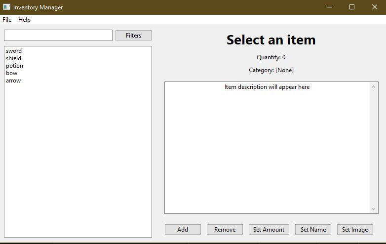
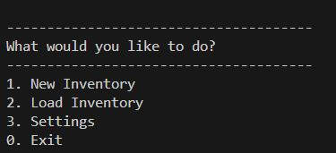

GUI Inventory Manager
A cross-platform C++ Inventory Management Program built with wxWidgets, designed to efficiently handle collections of items across Linux, macOS, and Windows.
Technologies Used
C++17
wxWidgets
Visual Studio
CMake
Project Evolution
Current GUI Version


Original CLI Version


Features
- Cross-Platform Compatibility: Works seamlessly on Linux, macOS, and Windows
- Customizable Attributes: Add, edit, or remove attributes for inventory items
- Search and Filter: Quickly locate items with advanced search options
- Data Persistence: Save and load inventory data from local files
- Intuitive Interface: Clean and responsive design using wxWidgets
Development Journey
Command-Line Origins
The GUI Inventory Manager evolved from a robust command-line application that established the core functionality:
- CSV-based data persistence
- Comprehensive item management
- Configurable settings system
- Input validation and error handling
Evolution to GUI
Building on this foundation, the project transformed into a modern graphical application using wxWidgets, introducing:
- Intuitive visual interface replacing command-line menus
- Real-time item updates and visual feedback
- Cross-platform compatibility
- Enhanced data visualization
Technical Growth
This evolution showcases the project's technical progression:
- From standard C++ file I/O to GUI-integrated storage systems
- Expansion from console-based validation to interactive form validation
- Migration from CSV-only storage to multiple data format support
- Integration of visual components while maintaining core business logic
Implementation
Core Components
- Modern C++17 features for robust implementation
- wxWidgets framework for cross-platform GUI
- Custom data structures for efficient item management
- File I/O handling for data persistence
Getting Started
Prerequisites
Ensure you have:
- C++17 compatible compiler
- wxWidgets library installed
- Visual Studio 2022 (for Windows users)
Installation
git clone https://github.com/Code-JL/GUI-Inventory-Manager.git
cd GUI-Inventory-ManagerResources
 GitHub Repository
GitHub Repository
License
This project is licensed under the MIT License. See the LICENSE file for details.